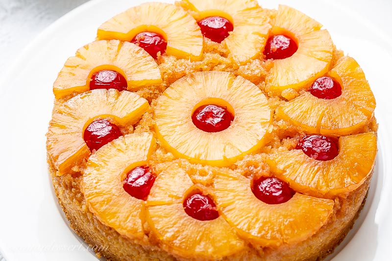

Pinapple Upside-down Cake Recipe

Pineapple upside down cake made in an iron skillet. It's quick, easy and beautiful.
Ingredients
- 1 1/2 cup butter
- 1 (20 ounce) can sliced pineapple
- 10 maraschino cherries
- 1 (18.25 ounce) package of yellow cake mix
Instructions
- Melt the butter over medium high heat in the iron skillet. Remove from the heat and sprinkle the brown sugar evenly to cover the butter.
- Next, arrange pineapple rings around the bottom of the pan, one layer deep. Place a maraschino cherry into the center of each pineapple ring.
- Prepare the cake mix as directed by the manufacturer, substitute the pineapple juice for the liquid in the directions. Pour the batter over the pineapple layer.
- Bake as directed by the cake mix directions. Cool for 10 minutes, then carefully turn out onto a plate. Do not let the cake cool too much or it will be stuck to the pan.